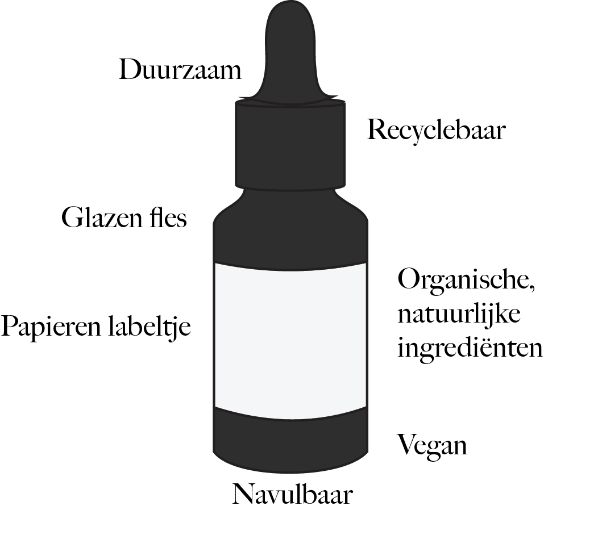

Duurzaamheid
De beauty industrie wordt vaak geassocieerd met het hebben van veel onnodige afval, zoals verpakkingen, single-use producten, productie van cosmetica.
OiLab, een beginnende beautymerk uit Amsterdam, wilt graag met hun nieuwe initiatief, het OiRefill programma, het onnodige afval van de beauty industrie dat jaarlijks op stortplaatsen beland, verminderen.
OiLab: Cuticle oil
Afval in de beauty industrie
Jaarlijks wordt er geschat zo’n honderdtwintig miljard verpakkingen voor beauty producten geproduceerd. Waar al die lege verpakkingen naartoe moeten, is de vraag. Ze kunnen naar de overvolle stortplaatsen, alleen een klein probleempje: stortplaatsen bevatten hoeveelheden grote stoffen die schadelijk zijn voor het milieu, dit komt doordat er giftige chemicaliën vrijkomen uit kunststoffen als ze afbreken. Daarnaast wordt er in de beauty industrie ook veel milieuonvriendelijke ingrediënten gebruikt.
Door gebruik van milieuvriendelijke ingrediënten, maar ook verpakkingen kan het onnodige afval dat jaarlijks in de beauty industrie voorkomt, verminderd worden.
Duurzaamheid ligt in het hart van OiLab’s waardes. OiLab wilt als beauty merk, graag hun impact op het milieu verminderen en bijdragen aan een schonere en duurzamere planeet. Ze streven naar afvalvermindering in de beauty industrie. OiLab verkoopt op dit moment alleen nagelriemolie’s maar zij zijn van plan om uit te breiden naar de verkoop van meerdere eigen beauty producten, zoals bodyoil.
The OiRefill Program
OiLab heeft als initiatief een programma genaamd ‘OiRefill’. Met OiRefill wordt hun impact van op het milieu verminderd en wordt er bijgedragen aan een schonere en duurzamere planeet. Binnenkort kunt u met uw lege OiLab beauty product(en) naar hun refill station in Amsterdam, om zo deel te nemen aan hun inzet voor afvalvermindering.
OiLab verpakt hun producten in glazen flesjes, die vervolgens in een kartonnen verpakking zitten. De labels zijn ook van karton gemaakt. Hun producten zijn dus gemakkelijk recyclebaar. Na gebruik van uw OiLab product(en) die vervolgens leeg raken, kunt u met uw glazen flesjes naar hun refill station bij Polish nail bar, en ze laten bijvullen in plaats van een gloednieuwe product te kopen. Hiermee helpt u de ecologische voetafdruk te verkleinen en kunt u genieten van hun voedende beauty producten zonder het milieu in gevaar te brengen.